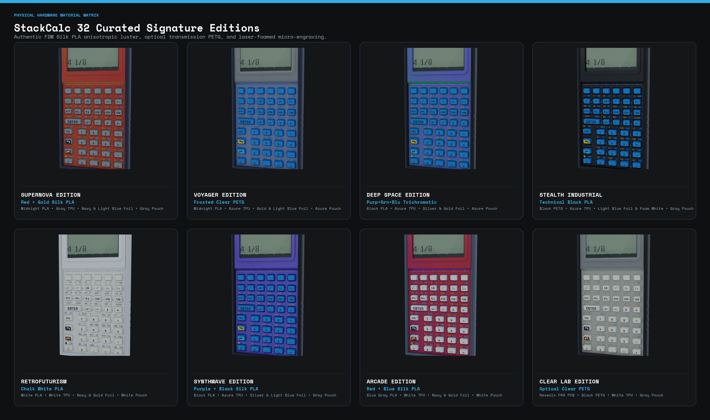
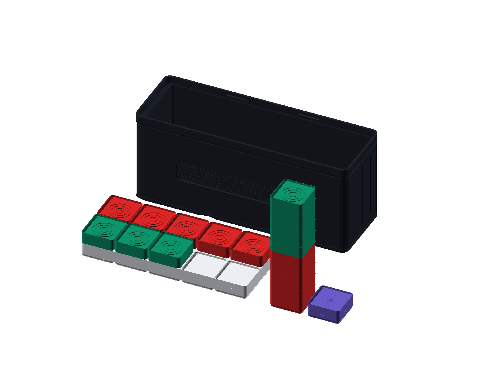

Chapter 1: Meet Your SC-6 Stack Calculator & Math Blocks
1.1 Opening Your Desktop Math Studio
Picture sitting at your kitchen table on a rainy Tuesday afternoon. Your math book is open on the desk, and right beside it rests a glowing tablet. Within ninety seconds of starting your work, a notification banner slides across the glass: a message chime, a game update, a video alert. Even when locked in "study mode," the tablet's bright electric backlight shines straight into your eyes like a flashlight, and its flat glass screen gives your fingers nothing to feel.
Now look at the other side of your desk: the StackCalc SC-6. Molded from tough, dark Midnight Navy plastic, it has no Wi-Fi, no pop-up alerts, and no noisy distractions. Its screen doesn't beam harsh light into your face—it reflects the natural daylight in your room just like a page of paper. And when you press a key, your finger doesn't slide across flat, silent glass. Beneath every keycap sits a tiny stainless-steel spring dome that clicks down with a crisp, satisfying snap!

Your brain works best when it can focus on a few clear steps at a time instead of juggling hidden numbers in the dark. When you try to solve a math puzzle on a buzzing tablet—or on a cramped screen that hides your first number the moment you type your second—all that extra clutter gets in your way. Just like a cutaway drawing that opens up a machine so you can see every gear turning inside (Macaulay, 2016), the SC-6 pairs physical math blocks on your desk with four visible number shelves on the screen, so every step stays right in front of your eyes.
1.1.1 Two Hands, One Workbench: Matching Your Tray to the Stack Screen
Set a 3D-printed math block tray on the left side of your desk and wake up your SC-6 on the right by tapping [C]. Notice how the vertical stack screen mirrors the physical layout of your desk tray: the first group of blocks you place in the top row of your tray with your left hand matches Waiting Shelf \(Y\) stacked right above on the screen, while the second group of blocks you place in the bottom row matches Ground Shelf \(X\) in large bold digits along the bottom of the screen.
Try that two-hand rhythm right now with the \(7\text{ mm}\) Tile Rule (6 + 4 = 10 Tiles). With your left hand, pick up 6 blue Counting Tiles (each tile is \(7\text{ mm}\) thick, making a \(42\text{ mm}\) stack), and with your right hand type 6 [ENTER] to lift 6 onto Shelf \(Y\). Next, pick up 4 gold Counting Tiles (\(28\text{ mm}\) tall) and type 4 onto Shelf \(X\)—without pressing [ENTER] after the second number. Now slide the 4 gold tiles onto the 6 blue tiles to build a 10-tile tower (\(70\text{ mm}\) tall, matching the exact height of your Ten-Frame 10-Rod!) as you tap [+] on your keypad. Shelf \(Y\) drops down and fuses with Shelf \(X\) into 10—and if you multiply 10 [ENTER] 7 [×], the screen confirms your tower stands 70 millimeters tall!
1.1.2 The Three Shift Modes: Normal, Top-Left Shift, and Top-Right Shift
Instead of hiding math tools inside confusing computer menus, every sculpted button on the SC-6 can perform up to three actions (Direct Press, [f] Shift, and [g] Shift):
- Direct Press: Tapping any key directly uses the main white label on the keycap face—digits 0–9, [ENTER], [+], [-], [×], [÷], clear [C], and backspace [<-] (which erases the last digit if you make a typing slip).
- [f] Shift Key: Pressing [f] first lights up the ↰ indicator in the top-left corner of the screen and activates the feature printed above the keycap, such as finding common multiples with [f] [LCM], clearing the entire stack with [f] [CSTK], recalling your last number with [f] [LASTX], and inspecting memory [f] [REGS].
- [g] Shift Key: Pressing [g] first lights up the ↱ indicator on the screen and activates the feature printed on the right bevel of the keycap, such as prime factor trees with [g] [FACT], simplifying fractions with [g] [SIMP], skip-counting ladders with [g] [REP], whole-number division with remainder [g] [÷R], low-power sleep [g] [OFF], and settings [g] [FLAGS]. (If you ever tap [f] or [g] by mistake, just tap the same shift key again to cancel it!)
Before we open your math block kits, slide the protective cover downward off the front of your calculator, flip the calculator over, and slide the cover onto the rear rails until it clicks into place. Your SC-6 now rests at a hands-free \(15^\circ\) reading angle, leaving your left hand free to build with blocks while your right hand taps keys onto the stack.
Your Favorite Color Theme, Same Friendly Shift Keys (
[f]and[g]):
Whether your SC-6 faceplate or simulator app is set toPure Black,Retro Futurism,Pioneer,Stealth,Supernova,Voyager, orArcade, the shift keys always work the exact same way. In this book, we always call them by their symbol rather than their color:[f]Shift (for the top-left label on a button) and[g]Shift (for the top-right label).
1.2 Your Nine 3D-Printed Block Studios & 4-Floor Stack
Why is your SC-6 calculator molded in dark Midnight Navy or Slate Gray, while your math blocks are bright white, radiant gold, and electric blue?
Think about how an astronomer uses a telescope: the tube of the telescope is dark matte black so stray light doesn't bounce into your eyes, letting you focus clearly on the bright stars. Your dark calculator frame gives your eyes a quiet, glare-free place to read numbers, while the bright math blocks invite your hands to reach out, sort, stack, and build.

Classic scientific instruments—from brass marine sextants to observatory control panels—have used this same high-contrast pairing for centuries. When the instrument housing is matte and calm, your eyes never tire during an hour of building, and your peripheral vision can immediately spot the difference between a coral-red counter, a golden rod, and a lilac twelfth-block on your desk mat.
Even better, each color in your block trays carries a consistent mathematical meaning across the entire kit: white always stands for 1 whole (or 1 unit step), coral red and radiant gold pair up to make 5s and 10s, electric blue marks twos and halves, and emerald green marks threes and thirds. Because your hands and eyes meet those same colors in every chapter, you can spot how numbers fit together across whole numbers, fractions, and prime factors before you even press a button.
1.2.1 How Your Nine Block Studios Pair with the Keypad
Whenever you start an activity in this book, place your 3D-printed block tray on the left side of your desk and your SC-6 in its \(15^\circ\) stand on the right. Every studio in your kit mirrors a matching mode or helper key on the keypad so your hands discover the physical answer on the tray right before the calculator confirms it on the stack:
- Ten-Frame Trays & Flip Counters (
[▦]): Two 5-pocket trays hold ten two-color disc counters (coral red on one side, radiant gold on the other) with built-in finger scoops for easy flipping. A raised 5-anchor divider rib splits each row of ten into two visual groups of 5 so your eyes spot totals at a glance without counting one by one. Tap[▦]to see your trays drawn live on the screen: Shelf \(Y\) shows the top tray, Shelf \(X\) shows the bottom tray, and tapping[+]slides counters across to complete a ten (7 + 5 = 12).

- Four-Color Counting & Array Studio (
[NUM]&[f] [RECT]) and \(90^\circ\) Corner L-Frame: Each Counting Studio kit holds 24 smooth-docking tiles in four colors (6 white, 6 blue, 6 gold, and 6 slate gray—or 144 tiles when 6 kits are shared at a table). Arrange tiles into rows and columns inside the \(90^\circ\) Corner L-Frame to build rectangular multiplication arrays (\(4 \times 6 = 24\)), then spin the tray sideways (\(6 \times 4 = 24\)) to see why swapping rows and columns never changes the total.

- 84 mm Fraction Towers & Comparator Tray (
[FDISP]&[g] [SIMP]): Why did our engineers make the \(1\text{-Whole}\) master tower \(84.0\text{ mm}\) tall instead of \(100\text{ mm}\)? Because \(84\) divides evenly by \(1, 2, 3, 4, 6, 7, 12, 14, 21, 28,\) and \(42\)—giving every fraction block (\(1/2 = 42\text{ mm}\), \(1/3 = 28\text{ mm}\), \(1/4 = 21\text{ mm}\), \(1/6 = 14\text{ mm}\), \(1/12 = 7\text{ mm}\)) an exact whole-millimeter height! - Try This 5-Second Height Check: Stack twelve \(7\text{ mm}\) Counting Tiles right next to your \(84\text{ mm}\) 1-Whole Fraction Tower, run your finger across their flush tops, and tap
12 [ENTER] 7 [×]to see84millimeters on Shelf \(X\). When you stand two \(1/4\) blocks in the tray and type0 [.] 2 [.] 4 [g] [SIMP], the screen divides top and bottom by their Greatest Common Factor in one tap to reduce2/4to1/2(displayingLOWEST TERMSif already simplified) while your fingers feel their matching \(42\text{ mm}\) height. - Prime Factor Studio (
[PRIME]&[g] [FACT]): Color-coded prime-number blocks (2,3,5,7, ...) are scaled so that stacking block2on top of block3reaches the exact height of \(2 \times 3 = 6\) on the back-wall ruler, while typing60 [g] [FACT]on the keypad reveals \(2^2 \times 3 \times 5\). - Planetary Geared Clock (
[🕒]): Real interlocking 12-to-1 planetary gears link the minute hand and hour hand so turning the minute hand automatically glides the hour hand—matching[🕒]Clock mode when you add hours and minutes across 60-minute boundaries. - Polyhedral Dice (
[🎲]), Place Value Trays ([PV]), Number Rack ([g] [COUNT]) & Quest Scoreboard ([f] [?]): Balanced Polyhedral Dice (\(d4, d6, d8, d10, d12, d20\)) pair with[🎲]digital dice rolls; Whole & Decimal Place Value Trays pair with[PV](347 = 300 + 40 + 7); the two-rail Number Rack (5 red and 5 white beads per row) pairs with[g] [COUNT]; and the Quest Scoreboard pegboard tracks your 4-second speedrun streaks in[f] [?]Quiz Mode.
1.2.2 Inside the 4-Floor Number Elevator
So far, our bottom two screen shelves—Waiting Shelf \(Y\) stacked right above Ground Shelf \(X\)—have been plenty for combining two piles of blocks. What happens, though, when you are organizing several studio trays on your desk at once and your math puzzle has three or four parts that need to wait their turn? That is where the two upper floors of your 4-Floor Number Elevator (\(T, Z, Y, X\)) come to the rescue.
Flip any of your 3D-printed math block trays upside down and look at the square sockets molded into its base. To keep counters, fraction towers, and array tiles from sliding around during an experiment, every tray snaps into a modular desktop baseplate made of \(42\text{ mm}\) squares called Gridfinity squares. Suppose you clear a space on your desk to set up a three-tray math station side by side: a Ten-Frame Tray that is \(2\text{ squares long} \times 1\text{ square wide}\), a Fraction Studio Well that is \(3\text{ squares long} \times 1\text{ square wide}\), and a Counting & Array Box that is \(3\text{ squares long} \times 2\text{ squares wide}\). How many Gridfinity squares does your whole three-tray station cover?
Watch how the upper shelves hold each finished tray automatically (2 [ENTER] 1 [×] 3 [ENTER] 1 [×] [+] 3 [ENTER] 2 [×] [+] \(\rightarrow\) 11). When you multiply the Ten-Frame Tray first (2 [ENTER] 1 [×]), 2 lands on Shelf \(X\). The moment you start typing the Fraction Well (3 [ENTER] 1), your finished 2 automatically rides the elevator up to Shelf \(Z\) to wait for you; tapping [×] turns the Fraction Well into 3 on Shelf \(X\) while 2 drops back down to Shelf \(Y\), and tapping [+] combines them into 5 squares. Finally, when you multiply the Counting Box (3 [ENTER] 2 [×]), that running total of 5 rides upstairs to Shelf \(Z\) and drops right back to Shelf \(Y\) so one tap of [+] lands on 11 Gridfinity squares:
| Keystroke | Register T | Register Z | Register Y | Register X | What Happens on the Stack |
|---|---|---|---|---|---|
2 [ENTER] |
0 | 0 | 2 | 2 | Put the ten-frame tray length (2 squares) onto Shelf \(Y\) |
1 [×] |
0 | 0 | 0 | 2 | Ten-frame footprint: \(2 \times 1 = 2\text{ squares}\) on Shelf \(X\) |
3 [ENTER] |
0 | 2 | 3 | 3 | Footprint 2 lifts to Shelf \(Z\); put fraction well length (3 squares) on Shelves \(Y, X\) |
1 [×] |
0 | 0 | 2 | 3 | Fraction well footprint: \(3 \times 1 = 3\text{ squares}\) on Shelf \(X\) (\(2\) drops to Shelf \(Y\)) |
[+] |
0 | 0 | 0 | 5 | Combine the first two trays: \(2 + 3 = 5\text{ squares}\) on Shelf \(X\) |
3 [ENTER] |
0 | 5 | 3 | 3 | Running total 5 lifts to Shelf \(Z\); put counting box length (3 squares) on Shelves \(Y, X\) |
2 [×] |
0 | 0 | 5 | 6 | Counting box footprint: \(3 \times 2 = 6\text{ squares}\) on Shelf \(X\) (\(5\) drops to Shelf \(Y\)) |
[+] |
0 | 0 | 0 | 11 | Add all three footprints: \(5 + 6 = 11\text{ Gridfinity squares}\) (\(462\text{ mm}\)) |
1.2.3 The Two-Box Comic-Book Storage Puzzle
Pause for a second and notice what happened on your screen in the table above right before you pressed the final [+] key: Shelf \(Y\) held 5 (the combined size of your first two trays) while Shelf \(X\) held 6 (the size of your third tray). Both subtotals sat right in front of your eyes at the exact same moment!
To see why watching Shelf \(Y\) and Shelf \(X\) together feels so reassuring in everyday life, imagine you are organizing your bedroom closet and packing your comic books into two different storage boxes: - 12 tall magazine boxes that hold 15 comic books each (\(12 \times 15 = 180\text{ comics}\)). - 8 smaller shelf boxes that hold 14 comic books each (\(8 \times 14 = 112\text{ comics}\)).
How many comic books have you packed altogether? $\((12 \times 15) + (8 \times 14) = 180 + 112 = 292\text{ comic books}\)$
If you typed 12 × 15 + 8 × 14 = from left to right on a simple four-function pocket calculator, it would add 180 + 8 = 188 in the middle and multiply 188 × 14 = 2,632—giving an answer almost ten times too big! And on a single-line screen, the first box count disappears as soon as you start typing the second one, so you never get to see whether the tall boxes held 180 or the small boxes held 112.
On your SC-6, your hands follow the exact order in which you pack the boxes on your floor:
1. Pack the tall boxes first: Tap 12 [ENTER] 15 [×]. Right away, Shelf \(X\) shows 180 comic books—so you know for sure how many comics fit in the tall boxes before you move on.
2. Pack the small boxes second: Tap 8 [ENTER] 14 [×]. The moment you touch 8, your finished 180 rides upstairs to Shelf \(Z\) to stay out of the way, and as soon as 8 × 14 finishes (112 on Shelf \(X\)), your waiting 180 drops right back down onto Shelf \(Y\)!
3. Check both boxes on the stack and snap them together: Look at your stack screen now: 180 is waiting on Shelf \(Y\) right above 112 sitting on Ground Shelf \(X\). One tap of [+] unites both sets of boxes into 292 comic books!
That same two-shelf visibility helps whenever you are shopping or building with a friend—like upgrading a skateboard with 2 packs of bearings at \(\$3.50\) each (3.50 [ENTER] 2 [×] \(\to\) \(\$7.00\)) and 4 deck stickers at \(\$0.75\) each (0.75 [ENTER] 4 [×] \(\to\) \(\$3.00\)), where you see the \(\$7.00\) bearings on Shelf \(Y\) and the \(\$3.00\) stickers on Shelf \(X\) before tapping [+] to get \(\$10.00\). Whenever you can see both pieces on the workbench before combining them, you know your calculation matches the real objects on your desk.
1.3 Peeling Back the Cover: The Math Inside Your SC-6
Have you ever wanted to peel back the cover of a gadget and see how everything works inside? When our engineers built the StackCalc SC-6, they hid five clever math designs inside the screen, the buttons, the kickstand, and the battery hatch.
Best of all, you can test all five designs right now using the exact stack moves you just learned!
1.3.1 The Daylight Mirror Screen & 8,580 Pixel Squares
Lean in close and look at a digit on your calculator screen. The numbers, ten-frame counters, and clock hands aren't painted ink—they are drawn on a miniature checkerboard of tiny square dots called pixels, arranged just like an array of Counting Tiles with \(132\) columns across and \(65\) rows high.
In computer memory, each pixel dot takes \(1\text{ bit}\) (1 for a dark dot, 0 for a silver-white dot), and \(8\) bits pack neatly into \(1\) byte of memory. How many pixel dots are on your screen altogether, and how many bytes of memory does it take to hold one full screen picture?
First multiply the \(132\) columns by the \(65\) rows (132 [ENTER] 65 [×]) to see all 8,580 pixels on Shelf \(X\). Notice how your SC-6 boots and resets ([C]) with Whole Number Mode ([NUM]) ON—showing clean whole numbers like 0 up to 999,999,999 and keeping division in whole numbers—while tapping [NUM] a second time (or tapping [f] [ALL] or [g] [FIX]) toggles Whole Number Mode OFF and switches to full decimal floating-point mode (so 132 [ENTER] 65 [×] 8 [÷] gives 1072.5 and 9.35 [ENTER] 4.5 [×] gives 42.075). With Whole Number Mode toggled off for decimals, type 8 (which automatically sends 8,580 up to Shelf \(Y\)) and tap [÷] (132 [ENTER] 65 [×] 8 [÷] \(\rightarrow\) 1072.5) to see that the whole screen fits into 1072.5 bytes (\(1,073\) whole bytes). (Try tapping [f] [LASTX] [×] right after—it brings back 8 and multiplies to show all \(8,580\) pixels again.)
Why do phones and tablets run out of battery every single day, while your SC-6 can run for months without charging? A tablet shines a bright electric flashlight through the glass from behind—and the brighter the room gets, the harder a tablet has to fight the sunlight.
Your SC-6 uses a completely different optical design: tucked behind that \(8,580\text{-pixel}\) grid is a silvery mirror that catches the natural light in your room and bounces it right back to your eyes. Under normal room lights, \(142.0\) units of light bounce off the silver background while only \(9.35\) units bounce off the dark numbers. Send 142 to the waiting shelf (142 [ENTER]), enter 9.35 on Shelf \(X\), and divide with [÷] (142 [ENTER] 9.35 [÷] \(\rightarrow\) 15.187165775): the background is 15.19 times brighter than the dark numbers, making it look just like crisp dark ink on paper.
1.3.2 Why the Keys Click and the Stand Tilts at \(15^\circ\)
Anyone who has tried typing fast on a flat tablet screen knows how easy it is to hit the wrong number when your fingers can't feel where the button edges are. Underneath every sculpted keycap on the SC-6 hides a tiny stainless-steel spring dome. When your thumb presses down, that metal dome pushes back until you reach \(400.0\text{ grams}\) of push (about the weight of a full soup can) over a \(1.6\text{ millimeter}\) drop—and then it gives a physical click so your fingers know you pressed the key without even looking down.
To measure the stiffness of that spring for each millimeter your thumb pushes it down, divide the push weight by the travel distance:
Start with the 400-gram push force (400 [ENTER]), type the 1.6-millimeter drop on the bottom shelf, and press [÷] (400 [ENTER] 1.6 [÷] \(\rightarrow\) 250) to see 250.0 grams per millimeter.
Just as sculpted buttons protect your thumbs, the sliding cover protects your posture. When a flat calculator lies on your desk, you have to hunch your neck over it just to read the screen. Snapping the SC-6 cover onto the back rails forms a \(15^\circ\) kickstand ramp that tilts the screen right toward your eyes.
For every \(1\text{ mm}\) that kickstand reaches back across your desk, the \(15^\circ\) angle raises the top edge \(0.2679\text{ mm}\) upward. Since the stand reaches \(80.0\text{ mm}\) from front to back, key in 80 [ENTER], follow it with 0.2679, and multiply with [×] (80 [ENTER] 0.2679 [×] \(\rightarrow\) 21.432) to see that the top edge rises 21.43 mm off your desk—the exact height of 3 stacked Counting Tiles (\(3 \times 7.0\text{ mm} = 21.0\text{ mm}\))!
(Curious how our engineering team designed the tool-free sliding calculator enclosure and 3D-printed the nine companion block studios? Turn to Appendix A: Hands-On Block Studio Guide & How We Built StackCalc or visit stackcalc.io/hardware.)
1.3.3 How 14 Copper Wires Read All 43 Buttons (The Keypad Matrix)
Here is a hardware puzzle that surprises almost everyone who opens up a calculator or computer keyboard for the first time: your SC-6 has 43 physical buttons, yet if you look at the green circuit board inside, there aren't 43 separate wires running from the buttons to the calculator's main chip—there are only 14 wires! How can 14 thin copper tracks read 43 separate buttons without ever getting confused?
The secret is a row-and-column grid called a key matrix, organized just like the numbered streets and avenues of a city or the rows and columns of your Counting & Array Studio! Underneath the keypad face, the 43 buttons are arranged along 8 horizontal row wires (Row 0 through Row 7) and 6 vertical column wires (Column 0 through Column 5), with 5 main columns running down all 8 rows and a 6th column wire reading the 3 extra keys in the top three 6-key rows:
Verify that wire-saving trick on your stack right now:
1. First, multiply the 8 horizontal rows by the 5 main vertical columns (8 [ENTER] 5 [×] \(\to \mathbf{40}\)), and add the 3 extra top-row positions (3 [+] \(\to \mathbf{43}\) buttons).
2. Next, add the 8 row wires and 6 column wires (8 [ENTER] 6 [+] \(\to \mathbf{14}\) total wires), and subtract that from the 43 wires you would have needed without a grid ([-] \(\to \mathbf{29}\) wires saved!).
Every thousandth of a second, the calculator sends a tiny electrical pulse down one row wire at a time and listens across the column wires. The instant your thumb clicks the [5] key—which sits where Row 5 crosses Column 2—the stainless-steel snap dome bridges Row 5 to Column 2, and the calculator immediately knows: "Row 5, Column 2 just clicked—put 5 onto Ground Shelf \(X\)!"
Even your 3D-printed desk trays use that exact same grid thinking. Designer Zack Freedman created an open-source workshop organizer standard called Gridfinity based on a \(42.0\text{ millimeter}\) square grid unit (\(1\text{U} = 42.0\text{ mm}\)). Why is \(42\text{ mm}\) such a clever building number? Because two \(42\text{ mm}\) grid squares side by side equal \(84.0\text{ mm}\) (\(42 \times 2 = 84\))—the exact height of your 1-Whole Fraction Tower and the exact height of 12 stacked Counting Tiles (\(12 \times 7.0\text{ mm} = 84.0\text{ mm}\))! Whether you snap a \(1 \times 1\) dice bin (\(42\text{ mm}\)), a \(2 \times 2\) L-Frame tray (\(84\text{ mm}\)), or a \(3 \times 1\) Fraction Studio case (\(126\text{ mm}\)) onto your desk baseplate, every piece in your math lab shares one unified measurement family.
1.3.4 Year-Long Coin-Cell Power & Caring for Your Calculator
Whenever you turn your calculator off ([g] [OFF]) or let it fall asleep in your backpack after 3 minutes of quiet time, it automatically saves all four stack shelves (\(X, Y, Z, T\)), your [f] [LASTX] number, and your quiz streaks so you can pick up right where you left off.
What lets a single battery the size of a nickel power your calculator for nearly a whole school year? Inside the rear safety-locked hatch sits a CR2032 coin-cell battery that holds \(225\) drops of battery energy. During a school day, your calculator uses \(0.65\) energy drops per hour for \(2\) hours of math class, and sips just \(0.0025\) energy drops per hour for the other \(22\) hours while sleeping:
Watch how we solve this two-team battery story on the stack step by step (first toggling Whole Number Mode [NUM] off—or tapping [f] [ALL] / [g] [FIX] 4—so we can enter decimal rates):
1. First multiply the Awake Team: 0.65 [ENTER] 2 [×] puts 1.30 awake drops on Shelf \(X\).
2. Next multiply the Sleeping Team: 0.0025 [ENTER] 22 [×] puts 0.055 sleeping drops on Shelf \(X\) while 1.30 waits safely on Shelf \(Y\), and tapping [+] adds them into 1.355 energy drops per day.
3. Finally, type 225 onto Shelf \(X\) (lifting 1.355 onto Shelf \(Y\)), tap the [x⇄y] (Swap) key so 225 trades places into Shelf \(Y\) and 1.355 sits in Shelf \(X\), and tap [÷] (0.65 [ENTER] 2 [×] 0.0025 [ENTER] 22 [×] [+] 225 [x⇄y] [÷] \(\rightarrow\) 166.051660517) to discover that one tiny battery lasts 166.05 school days:
| Keystroke | Register T | Register Z | Register Y | Register X | What Happens on the Stack |
|---|---|---|---|---|---|
0.65 [ENTER] |
0 | 0 | \(0.65\) | \(0.65\) | Put the awake energy rate (\(0.65\text{ energy drops/hr}\)) onto Shelf \(Y\) |
2 [×] |
0 | 0 | 0 | \(1.3\) | Awake energy drops: \(0.65 \times 2 = 1.30\text{ energy drops}\) on Shelf \(X\) |
0.0025 [ENTER] |
0 | \(1.3\) | \(0.0025\) | \(0.0025\) | Enter sleeping energy rate (\(0.0025\text{ drops/hr}\)); awake drops lift to Shelf \(Z\) |
22 [×] |
0 | 0 | \(1.3\) | \(0.055\) | Sleeping energy drops: \(0.0025 \times 22 = 0.055\text{ drops}\) on Shelf \(X\); awake drops drop to Shelf \(Y\) |
[+] |
0 | 0 | 0 | \(1.355\) | Total daily energy drops: \(1.30 + 0.055 = 1.355\text{ energy drops/day}\) on Shelf \(X\) |
225 [x⇄y] |
0 | 0 | \(225\) | \(1.355\) | Enter \(225\text{ total energy drops}\) and swap so \(225\) sits on Shelf \(Y\) and daily drops sit on Shelf \(X\) |
[÷] |
0 | 0 | 0 | \(166.0517\) | Divide total energy drops by daily drops: \(\approx 166.05\text{ school days}\) of battery power |
Keeping your SC-6 ready for action across all those school days takes almost no effort at all. Whenever the calculator goes to sleep between study sessions, a single tap of [C] in a well-lit room wakes the screen right up with all four stack shelves still in place (starting in [NUM] Whole Number Mode showing 0 on Shelf \(X\), or toggling to full decimal floating-point mode whenever you tap [NUM] again, [f] [ALL], or [g] [FIX]). If your screen is showing ten-frames ([▦]), clock hands ([🕒]), or a number line ([f] [LINE]), one tap of [C] (or [NUM]) switches straight back to regular numbers without erasing your stack, and you can customize display settings anytime in the [g] [FLAGS] menu (Flag 4 toggles the 4-shelf vs. 1-line stack view, Flag 5 cycles Stack Depth across 2-LV \(\to\) 4-LV \(\to\) 8-LV, and Flag 8 toggles Fixed Denominator /c). When you want to clear all stack shelves and saved statistics before a head-to-head race, just tap [f] [CSTK] ([f] + [<-]) and [g] [CLΣ] ([g] + [<-])—and when the tiny battery icon eventually appears in the top-right corner after months of exploring, an adult can use a small screwdriver to open the child-safe rear battery door and slip in a fresh CR2032 cell (+ side up) while internal memory keeps your shelves safe. Now that you know what is humming under the hood, let's put the calculator and tiles to work on your desk!
1.4 Desk Experiments & Looking Ahead to Chapter 2
Now that your hands know the feel of the clicky keypad, the daylight screen, and the nine color-coded block studios, let's put them to work right on your desk before turning the page to Chapter 2.
1.4.1 Three Quick Desk Experiments to Try
Grab your Counting Tiles and try these three five-minute experiments at your desk:
- The Tray-Width & Widescreen Check: Place 6 Counting Tiles flat in a row (\(6 \times 19.0\text{ mm} = 114.0\text{ mm}\)) right beside your 3-square Fraction Studio well (\(3 \times 42.0\text{ mm} = 126.0\text{ mm}\)), and use your stack (
3 [ENTER] 42 [×] 6 [ENTER] 19 [×] [-]) to prove that the 3-square tray is12mm wider than the 6-tile row! Then divide the screen's \(132\) pixel columns by its \(65\) pixel rows (132 [ENTER] 65 [÷]\(\to \mathbf{2.03}\)) to see why your display window is almost twice as wide as it is tall. - The Blindfolded Button-Click Challenge: Challenge a parent or sibling to close their eyes and count to
15on the calculator without looking at the screen! Tap1[g] [REP], close your eyes, and click[+]while counting only by the physical snap! of the buttons under your thumb. Stop when you think you have reached15, open your eyes, and see if your thumb nailed the exact number! - The Two-Token Quest Scoreboard Launch: Set up your Quest Scoreboard pegboard on your desk. Place your first
+10token in socket1for building a physical tile model, stack a second+10token on top of it (10 [ENTER] 10 [+]\(\to \mathbf{20}\)) for confirming the answer on the SC-6 stack, and then tap[f] [?]to try your first 60-second Level 1 Warm-Up Game!
1.4.2 Riding the Full 4-Story Number Elevator in Chapter 2
Long before famous architects and scientists ever wrote equations in college notebooks, many of them fell in love with math by holding geometric blocks just like yours. In 1876, when American architect Frank Lloyd Wright was nine years old, his mother Anna brought home a wooden box of geometric building blocks designed by German educator Friedrich Froebel. Wright spent hours at the kitchen table arranging those maple cubes and triangular prisms into symmetrical grids—and seventy years later, after designing masterpieces like Fallingwater and the Guggenheim Museum, he wrote that he could still feel those childhood blocks in his fingertips whenever he sketched a building.
Across the Atlantic in Munich, young Albert Einstein spent his afternoons constructing multi-story arches and towers out of interlocking Anker-Steinbaukasten (Anchor Stone blocks) and mechanical construction sets, training his mind to picture how forces and three-dimensional spaces balance one step at a time. When you snap two Counting Tiles onto your desk tray and watch their numbers rise from Ground Shelf \(X\) to Waiting Shelf \(Y\) on your daylight screen, your hands and eyes are building that exact same spatial intuition.
Even better, your SC-6 is built to grow right alongside you from your very first single-step addition all the way to multi-step engineering challenges. Every button click, every visual mode ([▦], [f] [LINE], [g] [COUNT], [PV], [🕒], [🎲]), and every block in your studio tray follows one consistent rule: put your numbers on the workbench first, see them clearly in front of you, and combine them when you are ready:
| SC-6 Desk Studio Feature | How It Is Engineered | How You Use It on Your Workbench |
|---|---|---|
| Daylight Screen (\(132 \times 65\) px) | Reflective LCD that grows brighter in room light or sunshine | Shows Waiting Shelf \(Y\) (and upper shelves \(Z, T\)) stacked vertically above Ground Shelf \(X\) (2.03 aspect ratio) |
| 43 Snap-Action Buttons | Stainless-steel snap domes (\(160\text{ gf}\)) with color-coded [f] (Gold) and [g] (Blue) shifts |
Gives your thumb a crisp physical click! so you can feel every entry without looking down |
[<-] vs. [C] Rescue Keys |
Single-digit backspace ([<-]) vs. Ground Shelf \(X\) clear ([C]) |
Fixes a mistyped digit or clears Shelf \(X\) to 0 while keeping Shelf \(Y\) safe upstairs |
| \(42\text{ mm}\) Gridfinity Block Trays | \(1 \times 1\) (\(42\text{ mm}\)), \(2 \times 2\) (\(84\text{ mm}\)), and \(3 \times 3\) (\(126\text{ mm}\)) modular baseplates | Organizes your Counting Tiles (\(19\text{ mm}\)), Fraction Towers (\(84\text{ mm}\)), and Dice on your desk |
| Visual Picture Windows | Instant one-tap switching between [▦], [g] [COUNT], [f] [LINE], [PV], [🕒], [🎲], and [NUM] |
Lets you inspect the exact same number as a ten-frame, a number line, or a 4-shelf stack |
Quest Scoreboard & [f] [?] Quiz |
10-socket token pegboard paired with the built-in 6-level Quiz Engine ([f] + [C]) |
Tracks your hands-on block builds (+10 pts) and 4-second speedrun streaks (+5 bonus) |
What happens when a puzzle on your desk has two or three parts happening at once, or when you type two numbers in the wrong order and want to rescue them in a single tap? Turn the page to Chapter 2: Stacking Numbers Just Like Blocks, where you will ride the full 4-story Number Elevator up to Shelf \(Z\) and Top Shelf \(T\)!